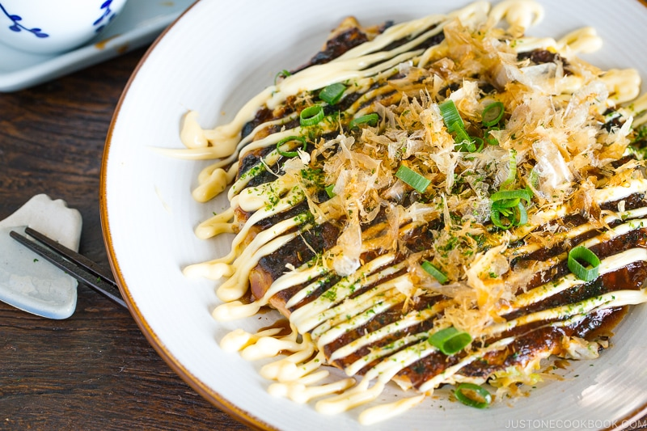

RECETA de Okonomiyaki
Video
Hacer Click
Ingredientes para 2 Okonomiyaki
Proceso de Elaboración
Preparación de la Masa:
En un tazón grande, mezcla la col rallada, el repollo rallado, los huevos, la harina, la salsa de soja, el aceite de sésamo y el agua hasta obtener una masa uniforme.
Cocción de Okonomiyaki:
Calienta una sartén grande a fuego medio-alto y añade un poco de aceite.
Vierte una porción de la masa en la sartén caliente y extiéndela en forma de disco de aproximadamente 1 cm de grosor.
Coloca las lonchas de bacon o panceta sobre la masa.
Cocina durante 3-4 minutos por cada lado o hasta que esté dorado y cocido por dentro.
Servir:
Sirve el okonomiyaki caliente, cubierto con salsa okonomiyaki, mayonesa japonesa, katsuobushi y aonori al gusto.